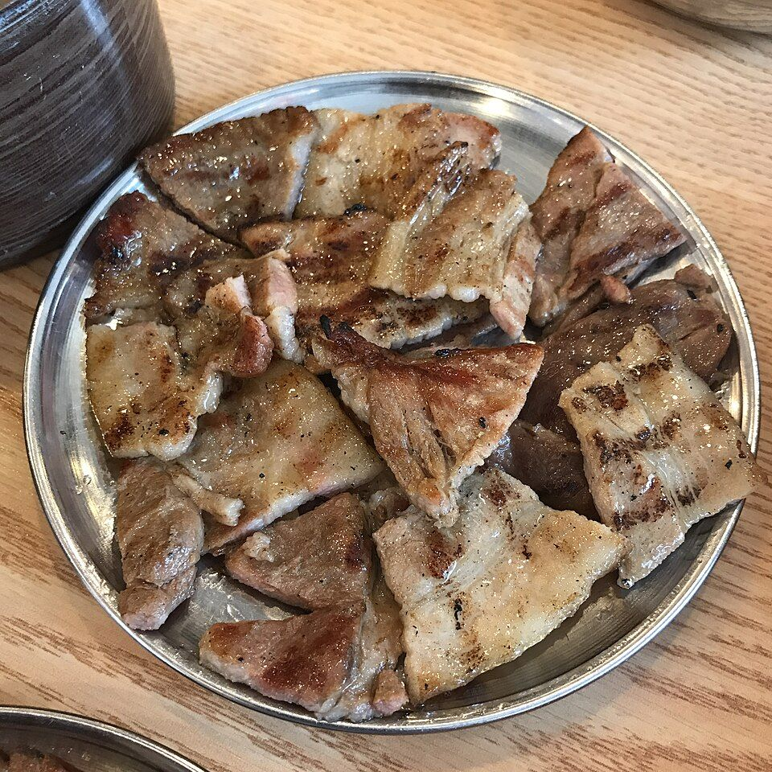

우리의 3주년,
포천에서 보내는 가을 하루
2026년 11월 1일 일요일 · 당일치기 드라이브
🗺 우리 동선 핀·목록을 누르면 해당 장소로 이동
🗓 하루 일정 아점 → 한옥카페 → 숲 → 호수 → 불빛 → 갈비

메뉴 예시 · 돼지불고기 📷 가게 사진 © chomjong · CC BY 2.0🍖 광릉한옥집 — 숯불고기 메밀쌈 & 평양냉면
아점 · 오픈런한옥웨이팅 있음'광릉식 불고기'로 유명한 집. 숯불에 구운 돼지·소 불고기를 얇은 메밀전병에 장아찌·나물과 싸 먹는 게 시그니처예요. 메밀 70% 평양냉면도 함께. 11시 오픈에 맞춰 도착하니 주말 웨이팅을 거의 피할 수 있어요.
- 추천: 돼지숯불고기 메밀쌈 + 평양냉면 1 (양이 넉넉한 편)
 메뉴 예시 · 계란쌍화차
📷 한옥 사진
© 허수자 · CC BY 2.0 KR
메뉴 예시 · 계란쌍화차
📷 한옥 사진
© 허수자 · CC BY 2.0 KR🏯 물꼬방 — 100년 된 한옥 카페
오늘의 카페한옥노키즈존종로에 있던 100년 넘은 한옥 두 채를 옮겨와 'ㄷ'자로 복원한 카페. 금강송 서까래와 전통 기와 아래, 마당 단풍을 보며 대추차·쌍화차를 마시는 고즈넉한 시간. 기념일 사진 찍기 제일 좋은 곳이에요. 든든하게 먹은 뒤라 차 한잔과 디저트로 딱이에요.
- 추천: 대추차, 계란쌍화차 + 한과/디저트
· 포옥 (죽엽산로 685-20) — 경기도 건축문화상 대상 받은 건축 카페, 호두 말렌카 케이크. 10:30~19:00, 목 휴무
· 고모리691 (고모루성길 267) — 고모저수지 뷰 테라스 대형 카페, 11:30~21:00 연중무휴. 물꼬방 바로 근처라 웨이팅 길면 여기로
 © Pulpitara · CC BY-SA 3.0
© Pulpitara · CC BY-SA 3.0🌳 국립수목원 (광릉숲) 단풍 산책
11월 초 단풍 절정기사전예약 필수500년 넘게 보존된 광릉숲 속 수목원. 전나무숲길·숲생태관찰로·육림호 주변을 천천히 걸으며 배부른 몸으로 산책하기 좋아요. 육림호 데크는 둘이 사진 찍기 좋은 곳.
- 추천 동선: 정문 → 육림호 → 전나무숲길 → 수생식물원 (약 1시간 20분)
- 산림박물관은 리모델링으로 올해 말까지 임시 휴관 — 숲길과 야외 전시원은 정상 운영
 © Sakku Cat · CC BY 3.0
© Sakku Cat · CC BY 3.0💎 포천아트밸리 — 채석장 절벽과 에메랄드 천주호
늦은 오후 빛이 예쁜 곳모노레일버려진 화강암 채석장이 문화공간으로 바뀐 곳. 깎아지른 절벽 아래 에메랄드빛 천주호와 단풍이 어우러져요. 올라갈 땐 모노레일, 내려올 땐 조각공원 산책로로 걸어 내려오는 코스 추천.
 📷 야경 사진
© Jinho Jung · CC BY-SA 2.0
📷 야경 사진
© Jinho Jung · CC BY-SA 2.0✨ 허브아일랜드 — 해질녘부터 불빛동화
노을 → 점등지중해 마을지중해풍 허브 마을. 노을 무렵 들어가 허브식물박물관·베네치아 마을을 둘러보고, 날이 어두워지면 불빛터널과 산타마을 조명이 켜져요. 하루의 하이라이트 사진은 여기서 💛
 메뉴 예시 · 갈비 한상
📷 가게 사진
© karendotcom127 · CC BY 2.0
메뉴 예시 · 갈비 한상
📷 가게 사진
© karendotcom127 · CC BY 2.0🔥 갈비장터 — 포천에 왔으면 이동갈비
저녁귀갓길 동선연중무휴저녁은 포천 대표 음식 이동갈비로 기념일 마무리. 송우리 시내라 고속도로 IC와 가까워 식사 후 바로 귀가할 수 있어요. 밑반찬·샐러드가 푸짐하게 나와요.
- 추천: 장터 이동갈비 2인 + 물냉면 / 된장찌개
🏡 집 도착
목표 22:00 귀가에 여유 15분. 일요일 저녁 상행 정체가 있으면 조금 늦어질 수 있어요.
✅ 출발 전 체크리스트
💡 알아두면 좋은 것
🍁
세 번째 가을도 함께 걸어줘서 고마워.
앞으로의 모든 계절도 같이 보자.